Sukumo, Kochi: things to do, food and stays
Sukumo · Kochi
Sukumo
Highlighted on the Kochi map.

Stay
宿毛リゾート 椰子の湯

Sukumo Resort Yashi No Yu
Resort hotel in Oshima, Sukumo with scenic views.
ゲストハウスみんちゅう
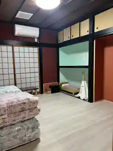
Guesthouse Minchu
ホテルあさひ
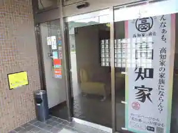
Hotel Asahi
ホテルマツヤ
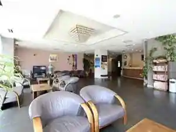
Hotel Matsuya
Hotel in Sukumo with business travelers.
歩き遍路さんのゲストハウス ALBERGUE SAKURA
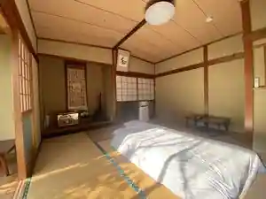
Aruki Henro Sanno Guesthouse ALBERGUE SAKURA
ゲストハウス さくら
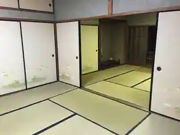
Guesthouse Sakura
Guesthouse in Henshima, Sukumo with one group per day and pet-friendly rooms.
まなべ旅館
Manabe Ryokan
Ryokan inn in Ekihigashi, Sukumo with business travelers.
ホテルアバン宿毛
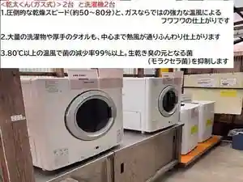
Hotel Aban Sukumo
Hotel in Sukumo with business travelers.
秋沢ホテル
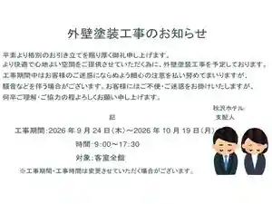
Akisawa Hotel
Hotel in Sachi, Sukumo with business travelers.
ＧＲＡＮＨＩＬＬＳ ＹＡＳＨＩ
GRANHILLS YASHI
Inn in Oshima, Sukumo with open-air baths and pet-friendly rooms.
Dining
居酒屋 いごっそ

Izakaya Igosso
天下茶屋
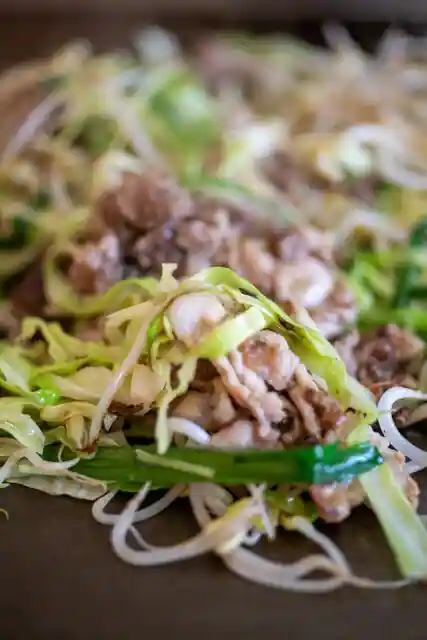
Tenka Chaya
二ノ宮金次郎
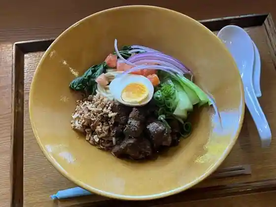
Ni No Miya Kinjiro
彩食や 一期一笑
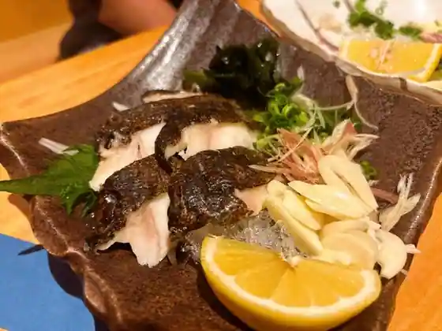
Sai Shoku Ya Ikki Issho
来々軒
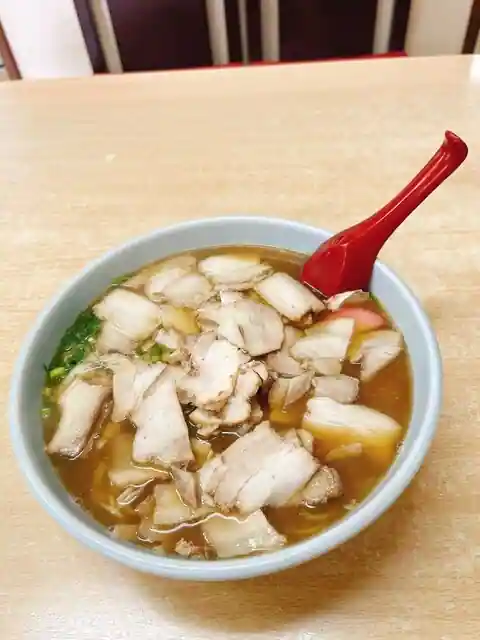
Rairai Ken
とんかつ かつ村
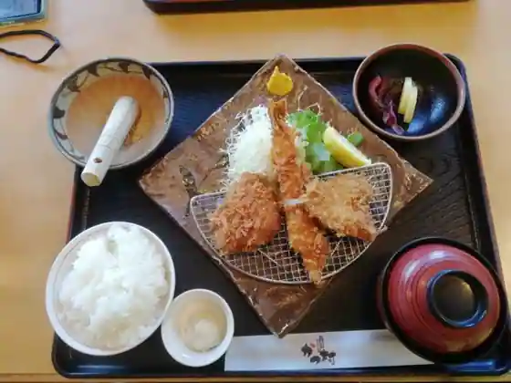
Tonkatsu Katsu Mura
菱田ベーカリー
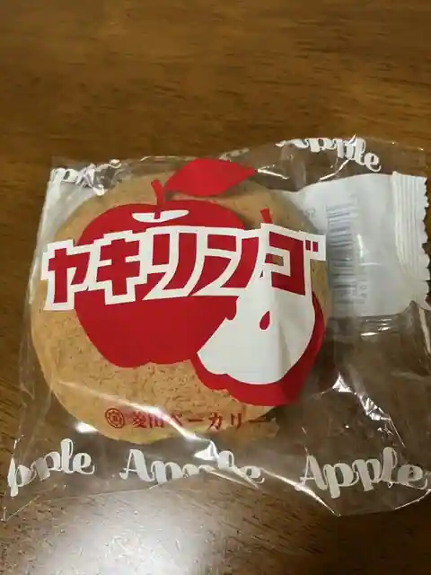
Hishita Bakery
水滸
Suiko
林邸カフェ
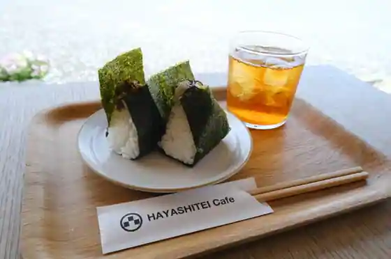
Hayashi Tei Cafe
酒と肴 直
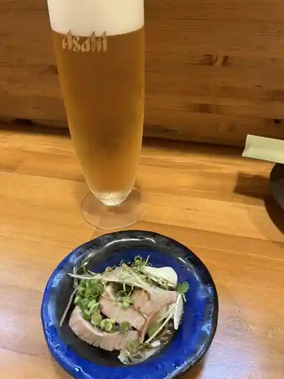
Sake To Sakana Choku
道の駅 すくも
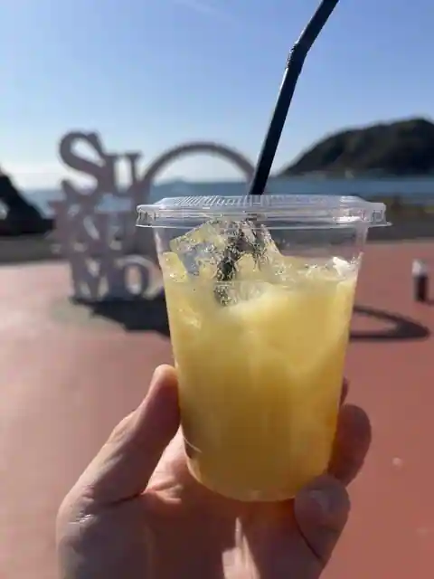
Michi No Eki Sukumo
満来屋
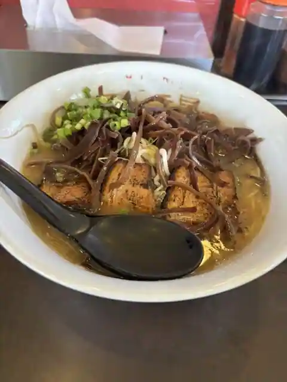
Manrai Ya
将元・さぬきうどん
Sho Moto Sanukiudon
眞兵衛
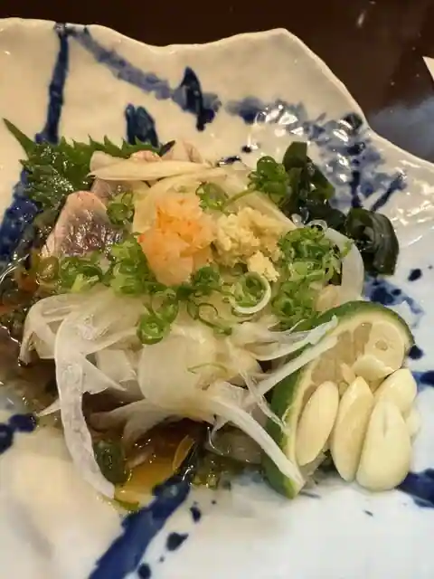
Shinbe
鶴亀
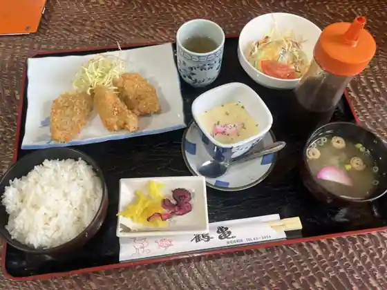
Tsurukame
四季和処福なが
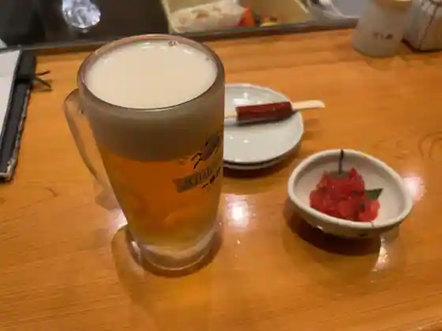
Shiki Wa Tokoro Fuku Naga
チャイニーズレストラン アルズ
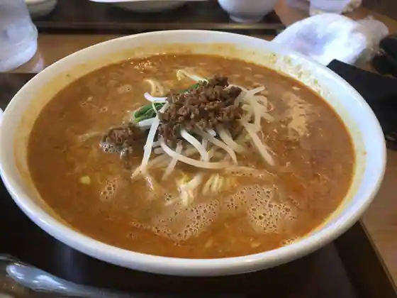
Chainizu Restaurant Aruzu
ブーランジェリー ヤマサキヤ
Buranjieri Yamasakiya
丸万
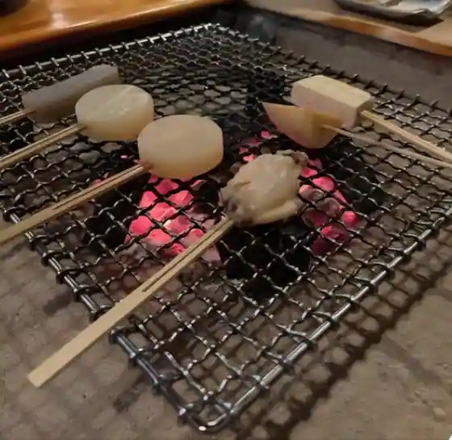
Maru Man
宿毛の海鮮小屋
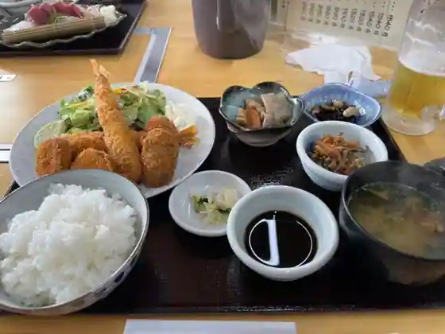
Sukumo No Kaisen Koya
八坂
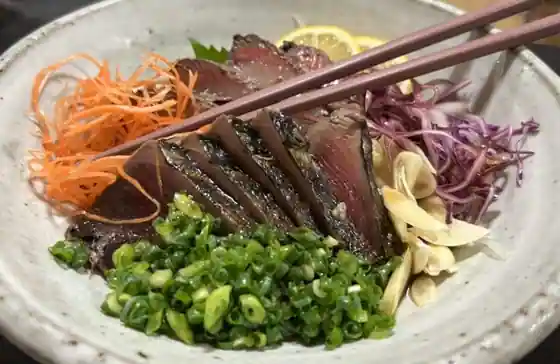
Yasaka
スワロー
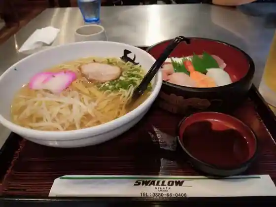
Suwaro
Sights
Sukumo Wan
Kanyo Shima

Sukumo Shiro
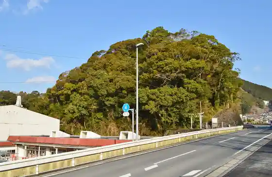
Nobumitsu Tera
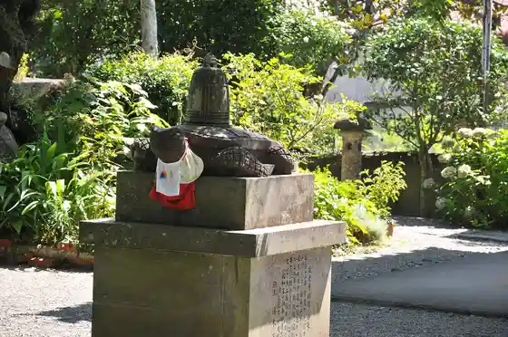
Oki no Shima
Dei Oketsu